5학년 21~24차시 · 나만의 만보기와 무선 통신
나에게 필요한 만보기를 만들어 고치고, 걸음 수를 무선으로 주고받아 입력·출력을 다른 기기까지 넓히기
나에게 필요한 만보기를 만들어 재 보고 고친 뒤, 무선으로 넓혀요.
 수업 흐름
수업 흐름
| 단계 | 시간 | 핵심 활동 |
|---|---|---|
| 8분 |
| |
| 32분 |
| |
| 40분 |
| |
| 40분 |
| |
| 33분 |
| |
| 7분 |
|
 준비물
준비물
 평가
평가
쓸 사람의 필요에 맞는 만보기를 만들어 재 보고 한 가지를 고쳐 다시 재며, 걸음 수와 알림을 다른 기기로 전송하고 뜨지 않는 곳을 찾아 고칠 수 있는가?
평가 기준 자세히
컴퓨팅 사고력 · 나만의 만보기 만들고 고치기와 무선 확장 — 쓸 사람의 필요에 맞는 만보기를 만들어 재 보고 한 가지를 고쳐 다시 재며, 걸음 수와 알림을 다른 기기로 전송하고 뜨지 않는 곳을 찾아 고칠 수 있는가?
| 수준 | 평가 기준 |
|---|---|
| 매우 잘함 | 쓸 사람의 필요를 입력·처리·출력으로 정리한 설계 카드대로 만보기와 고른 기능이 동작하게 만든다. 자기 만보기로 잰 걸음에서 직접 센 수와 기기 수를 적고, 한 가지만 바꾼 뒤 같은 방법으로 다시 재어 전후를 설명한다. 통신 약속표대로 걸음 수와 알림을 다른 기기에 보이고, 뜨지 않은 경우를 보낸 쪽·받은 쪽·약속 가운데 어디 문제인지 찾아 고친 뒤 다시 시험한 결과를 설명한다. |
| 잘함 | 설계 카드대로 만보기를 만들어 고치기 전·후 기록을 남기고, 약속표대로 걸음 수와 알림을 다른 기기에 보이며 뜨지 않은 곳을 고쳐 다시 시험하되 까닭 설명이 간단하다. |
| 보통 | 기본 만보기와 걸음 수 보내기는 만드나, 걸음 기록지의 전·후 가운데 한쪽이 비어 있거나 알림 일부가 뜨지 않거나 고친 뒤 다시 시험한 기록이 빠져 있다. |
| 노력요함 | 기본 파일과 개별 지원을 받고도 만보기 실행, 걸음 수 보내기, 직접 센 걸음과 기기 수 짝지어 적기 가운데 하나 이상에 어려움이 있다. |
| 미관찰 | 결석이나 미제출, 기기 장애로 확인하지 못한 경우. 낮은 성취로 적지 않고 따로 기록한 뒤 보충 확인 시점을 정한다. |
평가 방법 산출물 분석(설계 카드·걸음 기록지·통신 약속표) · 작동 확인(21차시 활동2 끝·23차시 걸음 경주 전) · 구술 확인 · ※ 확장 활동(무선 게임·테스트 대회)은 평가하지 않음
 체험 활동
체험 활동
 연동 도구
연동 도구
과정안에 나온 도구예요. 수업 전에 학교망에서 열리는지 확인해 주세요.
MakeCode (micro:bit) ↗마이크로비트 블록 코딩·시뮬레이터·무선(라디오)계정: 필요 없음라디오 블록 설명 ↗MakeCode (micro:bit) 안내마이크로비트 V2 ↗LED·버튼·가속도·소리 센서, 무선 통신계정: 필요 없음MakeCode 라디오 블록 ↗무선 만보기·무선 게임
내 수업 링크 걸어 두기
학급 패들렛, 엔트리 작품처럼 이 차시에 쓸 링크를 걸어 둬요. 이 브라우저에만 저장돼요. 학생 이름이 든 주소는 넣지 마세요.
 과정안 전문 펼치기 개요·교수학습 활동·그림
과정안 전문 펼치기 개요·교수학습 활동·그림
개요
| 성취기준 | [5실SW03-02] 프로그램을 고쳐 나에게 필요한 프로그램을 만들고, 잘못된 부분을 찾아 고친다. 연계 성취기준: [6실05-02], [06자율-3] |
|---|---|
| 핵심 역량 | 지식정보처리 역량, 창의적 사고 역량 |
| 지식·이해 | ① 프로그램의 입력·처리·출력의 뜻 ② 기기 수와 실제 수가 달라지는 까닭(센서 측정의 한계) ③ 기기끼리 수를 주고받는 무선 통신(송신·수신·그룹 번호) |
| 과정·기능 | ① 문제를 해결하는 기초적인 프로그래밍하기 ② 쓸 사람의 필요를 설계 카드로 정리해 나만의 만보기 만들기 ③ 직접 센 걸음과 기기 수를 비교하고 한 가지만 고쳐 다시 재기 ④ 걸음 수와 알림을 무선으로 주고받아 입력·출력을 다른 기기까지 넓히기 ⑤ (확장·선택) 모둠이 고른 무선 게임을 만들어 서로 시험하기 |
| 가치·태도 | 생활 속에서 컴퓨터를 활용해 해결 가능한 문제를 탐색해 보려는 자세 두 수가 다를 때 시험 조건을 살펴 까닭을 찾아보려는 자세 |
교수학습 활동
21차시도입8분
동기 유발
- 걸음을 손으로 세다가 수를 놓친 경험 이야기하기
- 나·동생·할머니 가운데 만보기가 필요한 사람 떠올리기
- 지난 시간에 만든 흔들기 카운터를 걸음 세기에 쓸 수 있을지 이야기하기
- (선택) micro:bit 재단의 만보기 소개 영상(영어)을 보며 만들 것 떠올리기
- 미션 카드 ‘내 만보기를 만들고, 걸음 수를 친구 기기로 보내자’ 읽기

학습문제 제시
- 나에게 필요한 만보기를 만들어 걸음을 재 보고 고친 뒤, 걸음 수를 무선으로 주고받도록 바꾸어 입력·출력을 다른 기기까지 넓혀 봅시다.
자료영상 ‘Step counter introduction’(micro:bit 재단, 영어): https://youtu.be/uAWc5a3PO7k
자료‘만보계’ 프로젝트 안내
https://microbit.org/ko/projects/make-it-code-it/step-counter/
유의점기기 나누기 시간을 도입에 포함하고, 충전 전용 케이블과 구별해 나누어 준다.
유의점화면의 수는 흔들림을 센 값이라는 점을 미리 알려 준다.
유의점소개 영상은 1분 길이이다. 자막을 켜고 자동 번역(한국어)으로 보여 주며, 필요하면 교사가 풀어 설명한다.
21차시전개32분
활동1. 쓸 사람 정하고 설계 카드 쓰기 (12분)
- 만보기를 쓸 사람과 그 사람의 필요를 한 줄로 적기
- 설계 카드의 들어가는 것(입력)·하는 일(처리)·나오는 것(출력) 세 칸과 목표 걸음 수 칸 채우기
- 입력은 흔들림·버튼, 처리는 걸음 수 1 더하기로 적기
- 출력은 화면의 수와 필요에 맞는 아이콘·소리(소리는 V2만)로 적기
- 짝에게 읽어 주고 빠진 칸 하나 표시받기
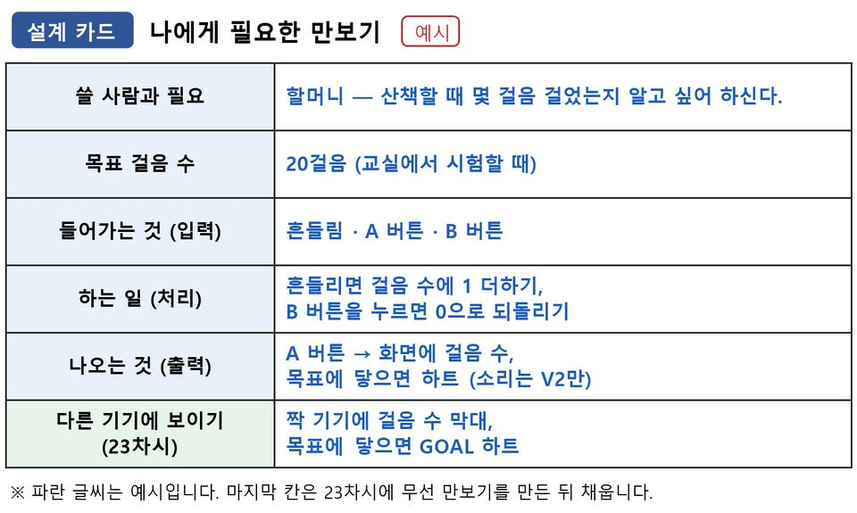
활동2. 기본 만보기 만들고 기능 하나 더하기 (20분)
- 지난 시간 흔들기 카운터 파일을 열고 변수 이름을 ‘걸음수’로 바꾸기(파일이 없으면 기본 뼈대 파일 열기)
- [흔들림 감지될 때] 안에 [걸음수 값 1 증가]가 있는지 확인하기
- [A 버튼 누를 때]에 [숫자 출력 걸음수]가 있는지 확인하고(없으면 넣기), [B 버튼 누를 때]에 [걸음수 에 0 저장]과 [숫자 출력 걸음수] 넣기
- [다운로드]로 마이크로비트에 옮긴 뒤, USB를 빼고 배터리 팩을 끼워 흔들어 보기
- 기능 카드 한 장 골라 더하기: 목표 알림(하트·소리)·진행 막대
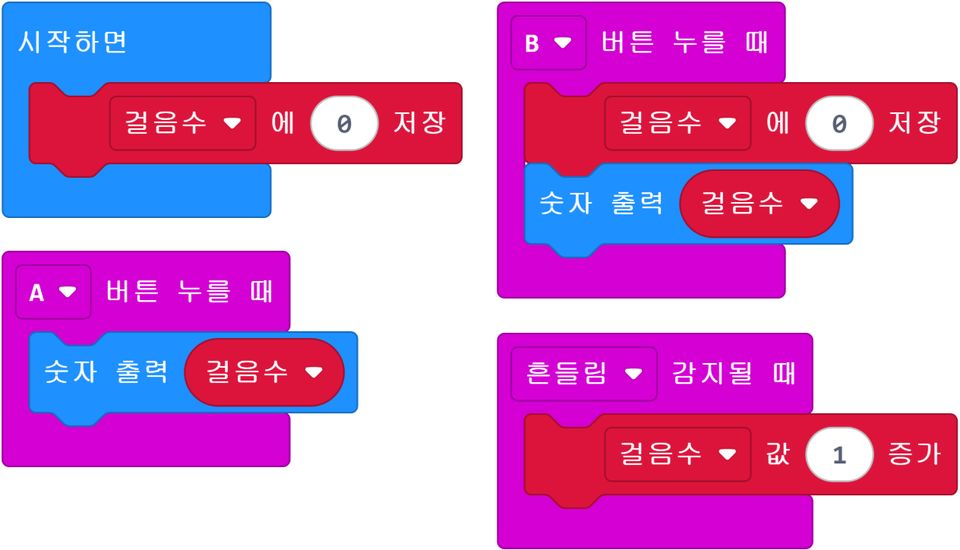
자료설계 카드(입력·처리·출력), 기능 카드 2장(목표 알림·진행 막대), 개인별 작동 확인표(21차시·23차시 칸)
자료기본 뼈대:
https://makecode.microbit.org/S63073-32332-31529-11953
자료기능 카드 목표 알림: https://makecode.microbit.org/_ix6LMp7VV8mv
자료기능 카드 진행 막대: https://makecode.microbit.org/_EcH4hXYdJPpt
자료기본 만보기(느린 학습자용): https://makecode.microbit.org/S45009-15911-11886-23040
유의점느린 학습자에게는 기본 만보기 파일을 주고, 빠른 학습자는 기능 카드 두 장을 모두 더하게 한다.
유의점시뮬레이터에서는 SHAKE 단추를 누를 때마다 걸음수가 1씩 늘어난다(A 버튼으로 확인한다).
유의점활동2 끝에 흔들면 수가 늘고 B 버튼으로 0이 되는지 개인별로 보고 개인별 작동 확인표의 21차시 칸에 표시한다.
22차시전개22분
활동3. 거치대 달고 세 가지 걸음으로 재기 (22분)
- 손목·신발끈·허리 가운데 달 곳 골라 골판지 띠와 벨크로로 감싸기
- LED 화면과 A·B 버튼이 가려지지 않는지 확인하기
- 걷는·세는·적는 역할을 정하고, 걸음 종류마다 B 버튼으로 0을 맞춘 뒤 출발하기
- 걷기·빨리 걷기·제자리 뛰기를 한 번씩 하기
- 걸음 종류가 바뀔 때마다 걷는 사람을 바꾸어, 모둠원 모두 자기 만보기를 달고 한 번 이상 걷기
- 출발 전 예상한 수와 직접 센 수, 기기 수를 걸음 기록지 한 줄에 적기
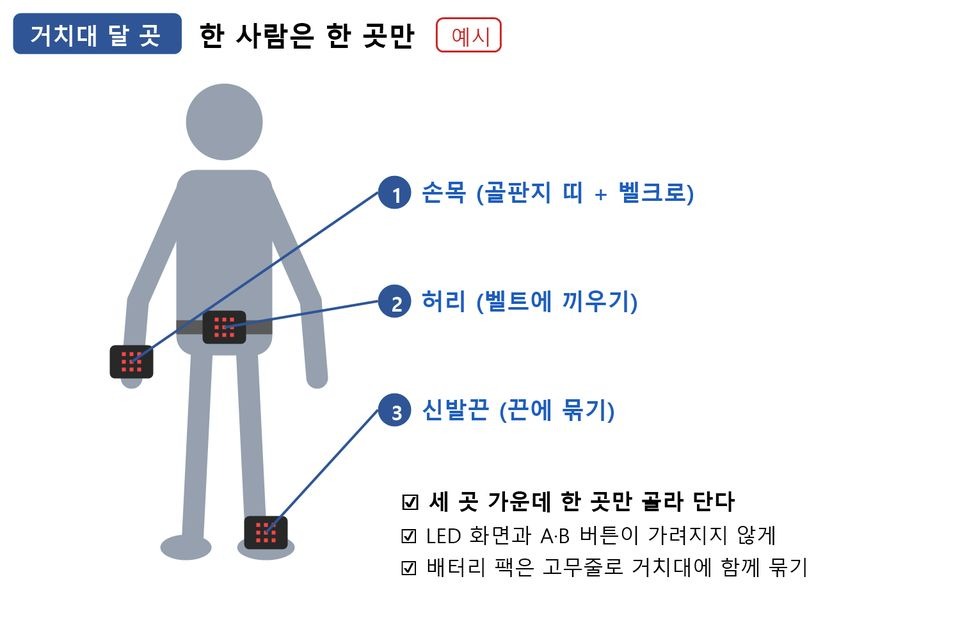
준비물마이크로비트, 배터리 팩, 색 테이프, 거치대 재료(골판지 띠, 벨크로, 고무줄, 마스킹테이프)
자료걸음 기록지(전·후)
유의점골판지 띠와 벨크로는 미리 잘라 두고, 칼과 글루건은 교사만 쓴다.
유의점걷기는 복도 색 테이프 약 10m 구간에서 진행한다.
유의점적는 사람은 세는 사람이 센 수와 기기 수를 걷는 사람의 기록지에 적어 준다.
22차시전개18분
활동4. 한 가지만 바꾸어 다시 재고 비교하기 (18분)
- 내 기록지에서 직접 센 수와 기기 수의 차이를 확인하고, 모둠 기록을 모아 차이가 가장 컸던 걸음 종류 찾기
- 기기 수가 더 많은지 적은지 보고 까닭 하나를 골라 기록지에 표시하기: 한 걸음을 여러 번 셈·약한 걸음을 못 셈·거치대가 헐거움
- 고른 까닭에 맞추어 하나만 고치기: ‘여러 번 셈’·‘못 셈’이면 세는 방법을 [흔들림 감지될 때]에서 기준값 비교로 바꾸기(기준값 만보기 파일을 열어 [기준값 에 1500 저장]의 수를 도움 카드의 내 거치대 위치 값으로 넣고 내려받기), ‘거치대가 헐거움’이면 내 만보기 그대로 거치대만 고치기
- 같은 구간을 내가 처음 걸은 걸음으로 다시 걷고, 고치기 전과 고친 뒤의 차이를 나란히 적기
- 두 수가 가까워졌는지 멀어졌는지 있는 그대로 적고 까닭 말하기
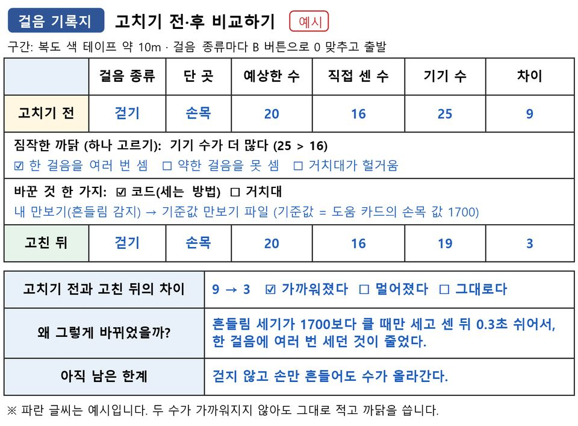
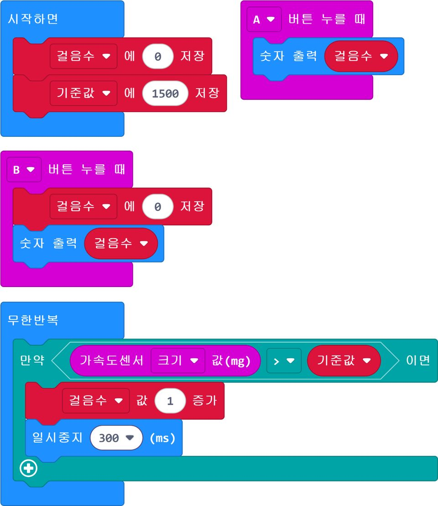
자료가속도 세기 막대로 보기
https://makecode.microbit.org/S26345-42130-84722-78865
자료기준값 만보기
https://makecode.microbit.org/S05040-43115-14563-65326
유의점기준값 만보기로 고친 학생은 바꾼 것을 ‘세는 방법(흔들림 감지 → 기준값 비교)’으로 적고 그 까닭을 말하게 한다.
유의점느린 학습자는 까닭 고르기를 교사와 함께 하고, 교사가 권한 한 가지로 고치게 한다.
유의점빠른 학습자는 여러 번 세면 기준값을 더 크게, 못 세면 더 작게 한 번 더 바꾸어 재 보게 한다.
23차시전개20분
활동5. 무선으로 수를 주고받아 보기 (20분)
- 만보기 수를 멀리 있는 가족이 보려면 어떻게 할지 말하고, (선택) 무선 소개 영상(1분)으로 기기끼리 수를 주고받는 모습 보기
- 쪽지 몸 놀이로 송신·수신·그룹 번호와 수마다 정한 뜻 알기
- 새 프로젝트의 [시작하면]에 짝별 그룹 번호 카드의 수로 [라디오 그룹을 ( ) 로 설정] 넣기
- [A 버튼 누를 때]에 [라디오 전송:수 1], [B 버튼 누를 때]에 [라디오 전송:수 2], [라디오 숫자 수신시]에 [숫자 출력 receivedNumber] 넣기
- 나와 짝의 기기 두 대에 [다운로드]해 A·B 버튼을 눌러 주고받아 보고, 짝과 1·2의 뜻을 정해 통신 약속표에 적기
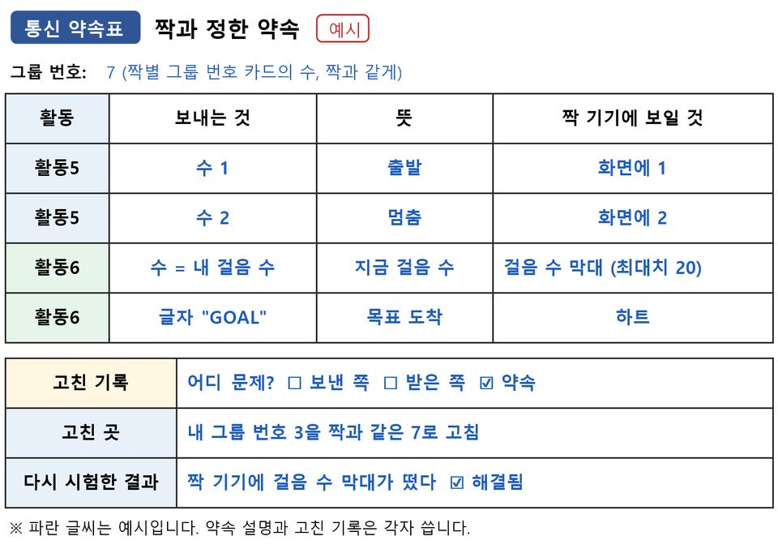
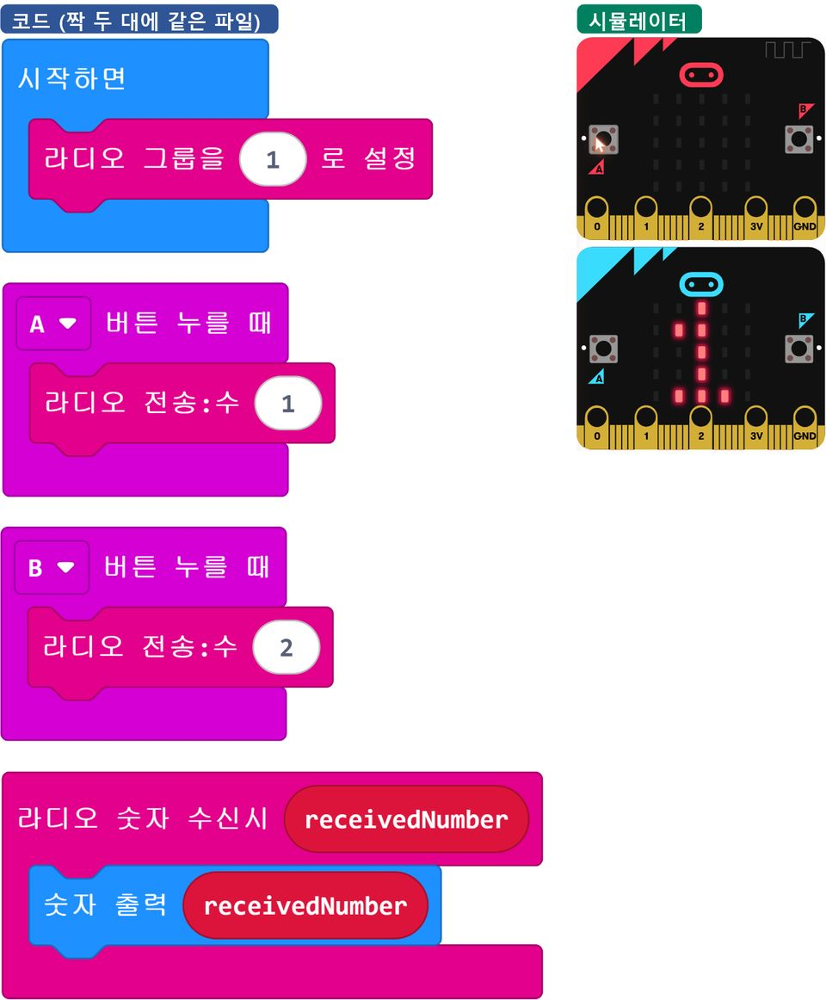
자료라디오 기초(수 주고받기): https://makecode.microbit.org/S22533-90480-53173-85462
유의점그룹 번호는 교사가 짝마다 다르게 배정하되, 파일 기본값인 1은 쓰지 않는다.
유의점나누어 주는 라디오 파일은 교탁 합계 파일(그룹 100)을 빼고 모두 [라디오 그룹을 1 로 설정]으로 되어 있고 [사진 8]·[사진 9]에도 1로 보이므로, 파일을 열거나 그림을 보고 만들 때 1을 짝별 그룹 번호 카드의 수로 바꾸게 한다.
유의점몸 놀이는 모자 색을 그룹 번호로 삼는다. 보내는 사람이 번호 쪽지를 들어 보이면 같은 색 모자만 정한 뜻대로 움직이고(예: 1은 출발, 2는 멈춤) 다른 색은 움직이지 않는다. 쪽지에는 번호만 적고 5분 안에 끝낸다.
유의점느린 학습자는 라디오 기초 파일을 열어 그룹 번호만 바꾸어 주고받게 한다.
유의점MakeCode 시뮬레이터는 라디오로 처음 보낼 때(A·B 버튼을 누를 때) 기기 한 대를 더 띄워 받은 수를 보여 준다.
23차시전개20분
활동6. 무선 만보기로 걸음 수 보내기·걸음 경주 (20분)
- 내 만보기 파일에 짝과 같은 번호로 [라디오 그룹을 ( ) 로 설정] 넣기
- 걸음마다 [라디오 전송:수 걸음수]로 보내고, 같은 파일에 [라디오 숫자 수신시]를 더해 [그래프 그리기 입력 receivedNumber 최대치 목표]를 넣어 짝의 걸음을 막대로 보기(보내기·받기를 한 파일에 모두 넣는다)
- 걸음 수가 목표와 같아지면 [라디오 전송:문자열 "GOAL"]을 보내고, 같은 파일의 [라디오 문자열 수신시] 안에 [만약 receivedString = "GOAL" 이면]([논리]의 글자 비교 블록)과 [아이콘 출력] 넣기
- 알림이 뜨지 않으면 보낸 쪽·받은 쪽·약속 가운데 어디 문제인지 골라 한 곳만 고치기(잘 뜨면 고치기 연습 파일은 시뮬레이터에서만 고쳐 보고, 기기에는 내 무선 만보기를 그대로 두기)
- 걸음 경주: 짝과 목표를 20으로 정하고 둘 다 B 버튼으로 0을 맞춘 뒤, ‘출발’ 신호에 함께 제자리 걷기를 해 누구의 GOAL 알림이 짝 기기에 먼저 뜨는지 보기
- 통신 약속표에 걸음 수·GOAL 약속을 더해 적고, 고친 곳과 다시 시험한 결과를 ‘고친 기록’ 칸에 각자 적기([사진 7])
- 설계 카드 ‘다른 기기에 보이기’ 칸에 짝 기기에 보일 걸음 수 막대와 GOAL 알림 적기
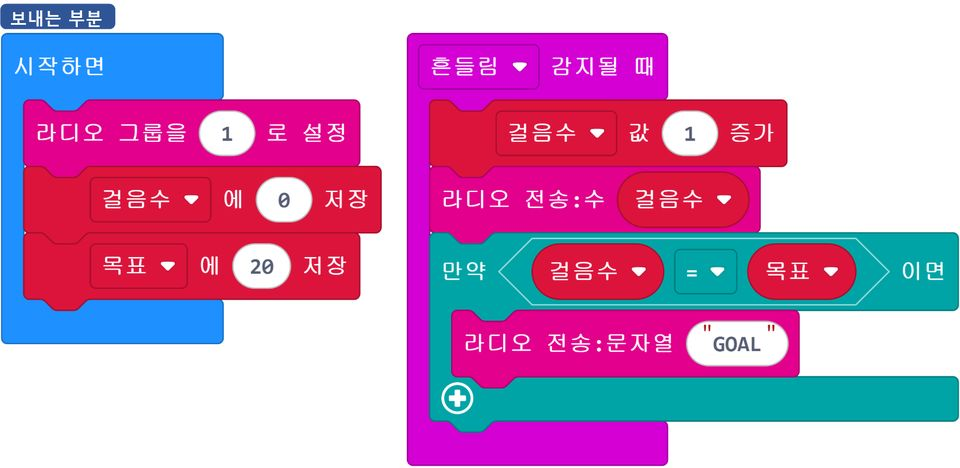
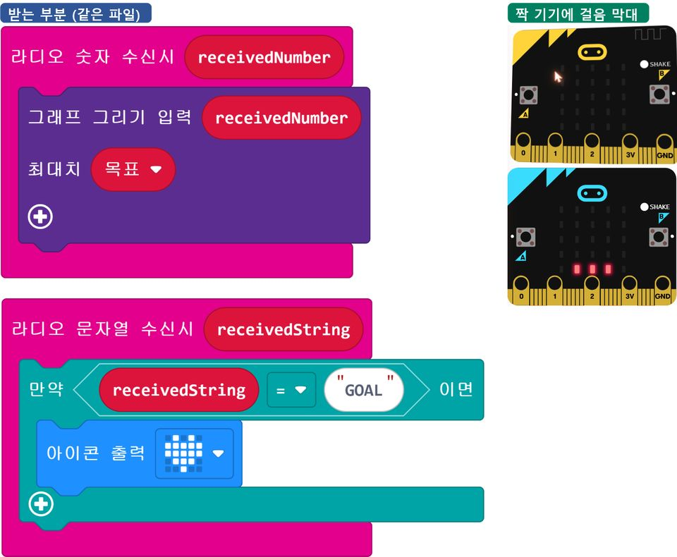
자료무선 만보기 기본 파일(목표 20): https://makecode.microbit.org/S76691-23285-99288-29953
자료고치기 연습 파일①: https://makecode.microbit.org/S36376-65310-99086-14455
자료고치기 연습 파일②:
https://makecode.microbit.org/S61769-05185-68242-15823
자료(교사용) 교탁 합계 수신기: https://makecode.microbit.org/S03466-08586-63857-38187
자료(빠른 학습자) 교탁 합계용 송신기(걸음마다 1): https://makecode.microbit.org/S75171-10086-76638-20020
유의점내 만보기에 ‘목표’ 변수가 없는 학생(기본 만보기·기준값 만보기)은 [변수 만들기...]로 ‘목표’를 만들어 [시작하면]에 [목표 에 20 저장]을 넣게 한다. 8분이 지나도 보내기·받기가 안 되는 학생과 느린 학습자는 무선 만보기 기본 파일(목표 20)로 바꾸게 한다.
유의점빠른 학습자는 걸음 경주를 마친 뒤 그룹 번호를 교탁 번호 100으로 바꾸고 걸음마다 1을 보내게 한다. 교탁 수신기의 A 버튼을 눌러 합계가 늘었는지 함께 보고(막히면 교탁 합계용 송신기와 견주어 보기), 누적 걸음 수를 보내면 합계가 틀리는 까닭도 말해 보게 한다.
유의점목표에 닿으면 멈추게 한다(계속 걸으면 막대가 하트를 덮는다). 막대는 목표 20이면 18걸음부터 가득 차므로 도착은 하트로 확인한다.
24차시전개33분
활동7. [확장] 모둠이 고른 무선 게임 하나 만들기 (18분)
- 가위바위보 대결과 신호 세기 보물찾기 가운데 하나 고르기
- 고른 게임의 완성 파일을 열어 그룹 번호를 교사가 정한 모둠 번호(1은 쓰지 않음)로 바꾸고 [다운로드]하기(가위바위보는 같은 파일을 두 기기에, 보물찾기는 보물 기기 파일과 찾는 기기 파일을 한 대씩 넣고 찾는 기기의 -60·-75는 도움 카드 값으로 바꾸기)
- 가위바위보: 흔들면 0(바위)·1(가위)·2(보) 가운데 하나가 무작위로 정해져 내 화면에 뜨고 짝에게 간다. 둘 다 흔든 뒤 A 버튼으로 짝이 낸 손, B 버튼으로 내 손을 보며 누가 이겼는지 말하기
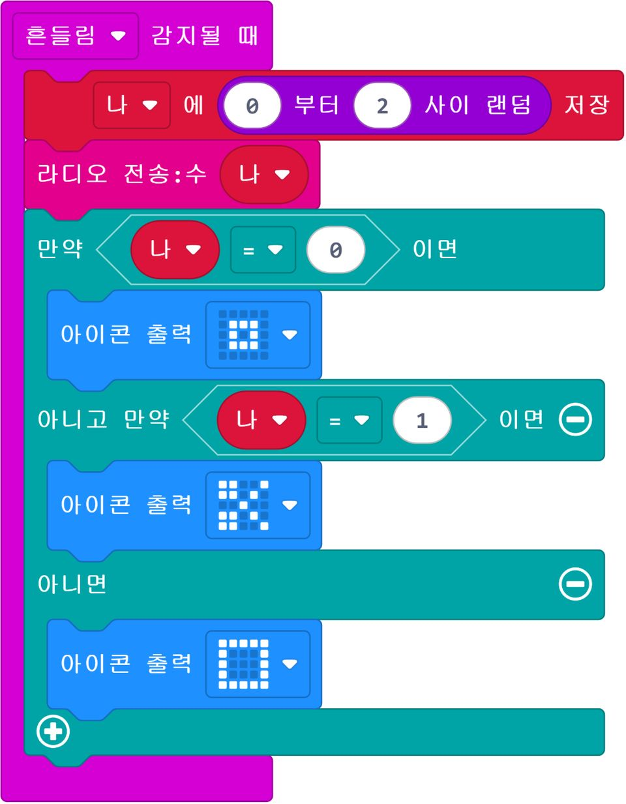
- 보물찾기: 보물 기기는 계속 신호를 보내고, 찾는 기기는 신호가 셀수록(가까울수록) LED 줄을 더 많이 켜기
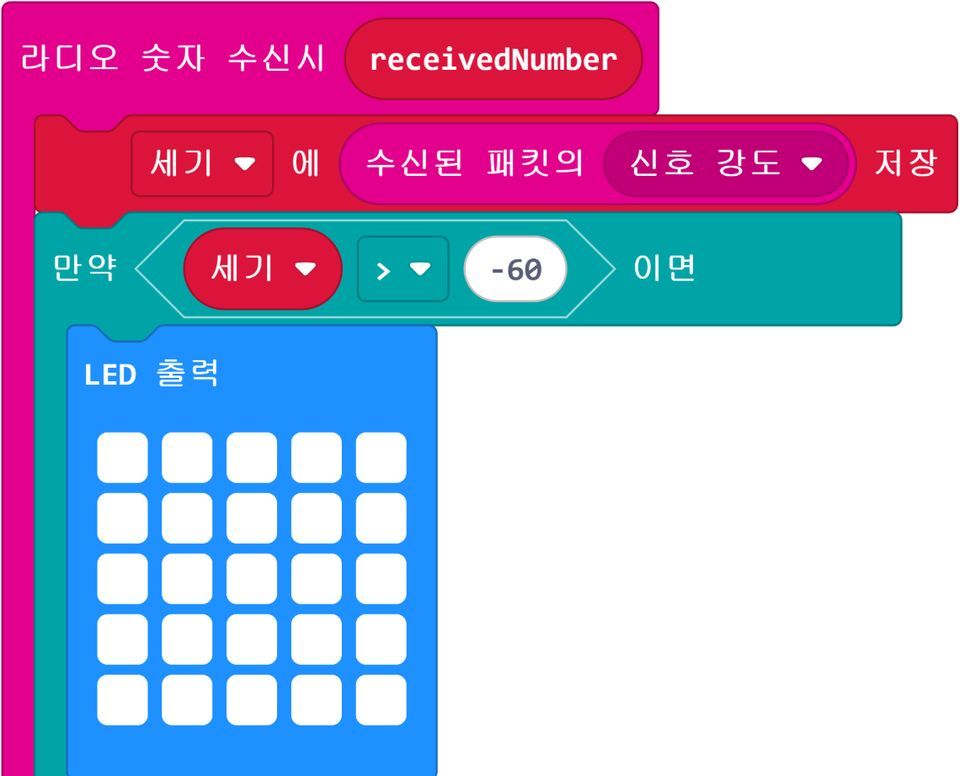
- 게임 설명서에 하는 법·통신 약속·그룹 번호 적기
활동8. [확장] 게임 테스트 대회와 버그 하나 고치기 (15분)
- 다른 모둠 한 곳에서 설명서만 보고 게임 해 보기
- 이상한 점을 ‘언제·무엇을 했더니·무엇이 떴다’로 버그 카드에 적기
- 받은 버그가 보낸 쪽·받은 쪽·약속 가운데 어디 문제인지 고르기
- 블록 한 곳만 고쳐 다시 시험하고 전후를 카드 뒷면에 적기
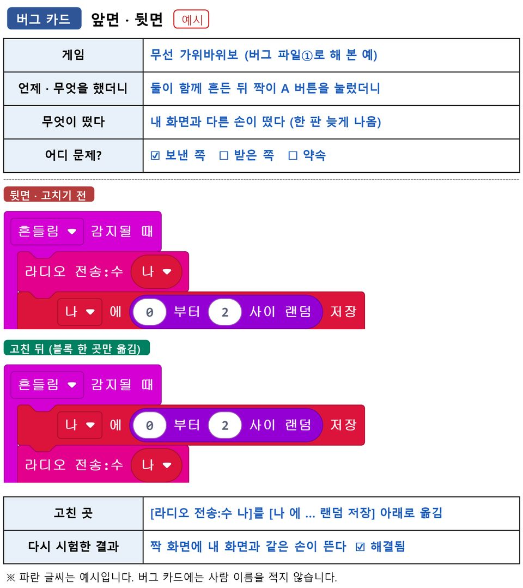
준비물마이크로비트(모둠당 2대), 배터리 팩, USB 케이블, 버그 카드, 모둠별 바구니
자료게임 설명서 용지, 게임 도움 카드
(신호 세기 기준값 예시 -60·-75, 보물 기기는 [라디오 전송 강도를 1 로 설정]으로 범위 줄이기)
자료무선 가위바위보: https://makecode.microbit.org/S71322-17885-01209-06402
자료보물찾기 보물 기기: https://makecode.microbit.org/S73687-34793-05312-82553
자료보물찾기 찾는 기기: https://makecode.microbit.org/S90898-42976-80637-69469
자료버그 파일①(가위바위보, 보낸 쪽 순서): https://makecode.microbit.org/_08U78zhmq9Yy
자료버그 파일②(보물찾기, 받은 쪽 조건 순서):
https://makecode.microbit.org/S59531-18677-90255-29572
유의점보물은 교실 안에만 숨기고 뛰지 않게 한다.
유의점신호 세기는 -128(약함)~-28(강함)이다(V1은 -42쯤까지). 수업 전 찾는 기기의 [라디오 숫자 수신시] 맨 아래에 [숫자 출력 세기]를 잠시 넣어 보물 곁과 교실 끝에서 재고, 도움 카드의 -60·-75를 고친다.
유의점버그 카드에는 사람 이름 대신 한 일과 뜬 결과만 적게 한다.
유의점[사진 12]는 버그 파일①의 풀이이므로 학생에게는 빈 버그 카드만 보여 준다.
유의점버그를 찾지 못한 모둠은 고른 게임의 버그 파일(한 곳만 틀린 코드)로 같은 방법으로 고쳐 보게 한다.
유의점빠른 학습자는 두 번째 버그를 같은 방법으로 고쳐 보게 한다.
유의점확장을 못 하는 학급은 고치기 연습 파일②까지 마치고 ‘고친 기록’ 칸을 채운 뒤, 걸음 경주를 한 번 더 하고 통신 약속표를 다듬어 마무리한다.
24차시정리7분
배운 내용 정리 (5분)
- 설계 카드를 보며 처음 만보기와 무선 만보기에서 들어가는 것·나오는 것이 어떻게 달라졌는지 말하기
- 통신 약속표의 ‘고친 기록’을 보며 무선 만보기에서 고친 곳과 다시 시험한 결과를 한 줄로 말하기
다음 차시 예고 (2분)
- 다음 시간에는 무선 만보기처럼 우리 학교 문제를 푸는 무선 도구를 모둠이 함께 만든다는 안내 듣기
- 파일 이름을 확인하고 기기와 배터리 정리하기
자료설계 카드, 걸음 기록지, 통신 약속표
유의점쓰기가 어려운 학생은 구술로 확인한다.
유의점짝과 함께 만든 무선 만보기여도 약속표 설명과 고친 기록은 각자 쓰게 한다.
유의점파일(프로젝트) 이름이 반·번호로만 되어 있는지 다시 확인한다.